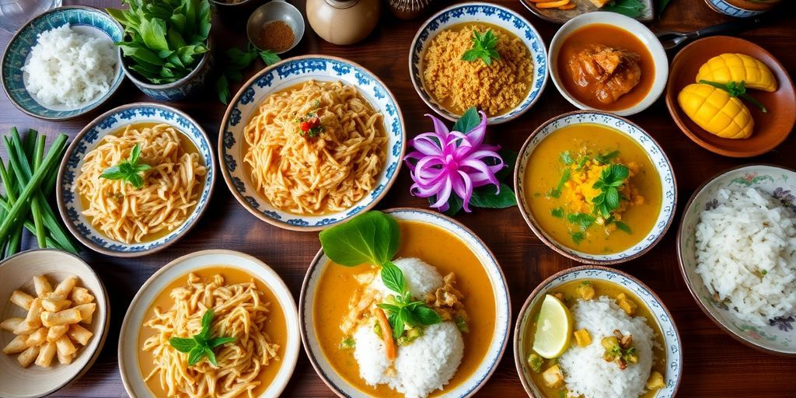

Embark on a Culinary Adventure
Discover the Flavors of Thailand
Tom Yum Goong: A Spicy Thai Delight
Tom Yum Goong
is a classic Thai soup renowned for its bold flavors and aromatic spices.
This hot and sour soup features a tantalizing blend of lemongrass, galangal, and kaffir lime leaves, combined with succulent shrimp.
The key to a delicious Tom Yum Goong lies in the balance of flavors – sweet, sour, salty, and spicy.
Ingredients:
- Lemongrass: 2 stalks
- Thai Basil: 1 cup
- Kaffir Lime Leaves: 3 leaves
- Shrimp: 500g
Preparation:
- Simmer the broth for 10 minutes.
- Add lemongrass, galangal, and kaffir lime leaves.
- Stir in shrimp and cook until pink.
- Season with fish sauce, lime juice, and chili paste.
- Garnish with Thai basil and serve hot.
Cooking Tips:
- 1/4 cup of fish sauce adds authentic Thai flavor.
- 1 tablespoon of chili paste gives the soup its signature heat.

| Ingredient | Quantity |
|---|---|
| Lemongrass | 2 stalks |
| Thai Basil | 1 cup |
| Kaffir Lime Leaves | 3 leaves |
| Shrimp | 500g |
| Preparation Time: 20 minutes | |
| Serving Suggestions: Serve with steamed rice or jasmine tea. | |